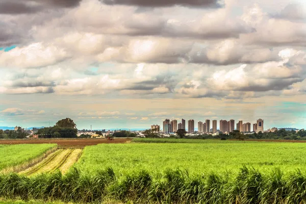
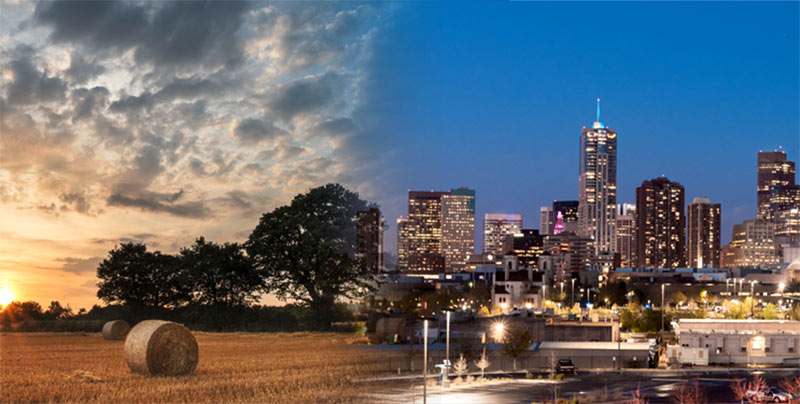

Celebrando harmonias
nesta pagina mostraremos um pouco da realidade do campo e da cidade .

Celebrando harmonias
campo e cidade

animais
animais do campoo

campo e cidade
dois locais e opostas realidades

cidade
a diferença entre campo e cidade

diferenças
diferença entre uma cidade e o campo

Agricultura
gerar matérias-primas para fabricar álcool, e combustível alternativo brasileiro, e para favorecer

Trabalho
Uma realidade cruel mais sempre vista tanto no campo quanto na cidade a falta de emprego a desigualdade em ambos lugares